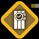
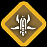

Destroy
The GDF Engineer class disarms the Strogg Plasma charge and Strogg Constructor class disarms the GDF HE Charge. As an Engineer or Constructor, approach the explosive you wish to disarm and equip the Repair Tool/Repair Drone, or hit the Use Key ("Default F") to disarm the charge.
 Kill all GDF Soldiers or Strogg Aggressors.
Kill all GDF Soldiers or Strogg Aggressors.
Escort MCP
Fire at the MCP with everything you have and kill GDF Engineers trying to repair it.
The MCP is most vulnerable to Aggressors with Obliterator's, Tormentors, the Oppressor Violator Strikes / Artillery and the Constuctor's Anti Vehicle defenses.
Construction
Kill GDF Engineers / Strogg Constructors.
The attacking teams progress on Construct Objectives cannot be reversed, however, Construct Objectives will decay after a period of time if the attacking team has not touched the Objective, eventually resetting the Objective back to the beginning of the construction phase.
Hack
Kill GDF Covert Ops / Strogg Infiltrator
The attacking teams progress on Hack Objectives cannot be reversed, however, Hack Objectives will decay after a period of time if the attacking team has not touched the objective, eventually resetting the objective back to the beginning.
Transport
Kill the Carrier, and run over the dropped Objective to return it to its start location.

Flyer Drone Attack
Kill all Strogg Infiltrators and Flyer Drones.